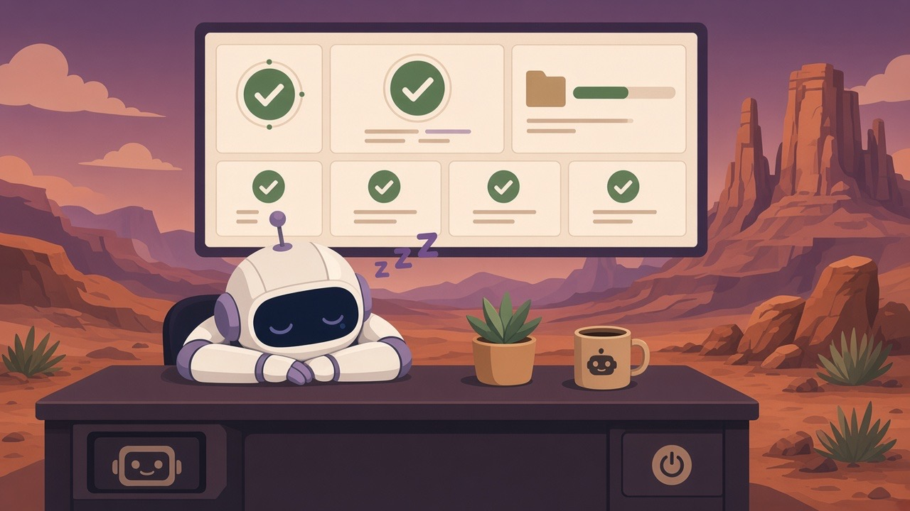
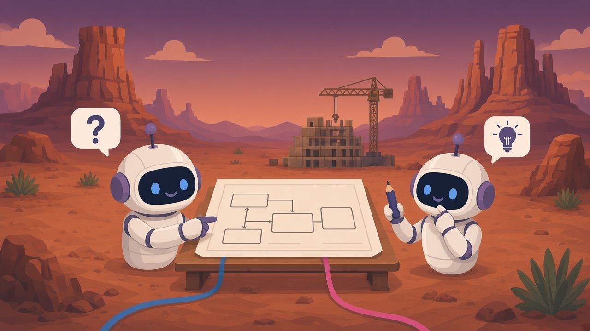

Engineering leadership
Lead local and remote teams through architecture, delivery, QA, release engineering, and client implementations. Mentoring, stakeholder partnership, and clear roadmap priorities.
Strathmore, AB · Remote
Engineering Director · Software Architect
Hands-on engineering leader with 20+ years building software for charter aviation, higher education, ecommerce, and digital music. I lead local and remote teams, set architecture, and still write code — preferring open source and pragmatic delivery.
Four instruments on the panel
Lead local and remote teams through architecture, delivery, QA, release engineering, and client implementations. Mentoring, stakeholder partnership, and clear roadmap priorities.
Design platforms that last: GraphQL gateways, API contracts, ERP systems, and modernization that keeps production running while the new work ships.
Schema-first API design, Apollo/Node gateways that unify internal data and vendor APIs, and integrations that surface problems in the product — not in someone's head.
AI-assisted design, coding, and documentation, plus internal tooling — assistants, automation, and decision support with agent memory and retrieval. Draft first, code checks, person confirms. Never the unchecked source of truth.
Flight path
Software consultancy focused on architecture and delivery for charter aviation ERP work. Coordinate local and remote contributors; build crew optimization and regulation validation services; use AI agent workflows and internal tools with persistent memory and retrieval.
Designed a GraphQL gateway so internal data and learning-management vendor APIs could be queried from one place. Shipped organization health checks that diagnose integration settings in the product itself.
Led local and remote teams for a cloud aviation ERP: architecture, delivery, QA, release engineering, client implementations, and production support. Partnered with operations and safety leaders to turn regulatory needs into roadmap priorities.
Senior architect and platform roles across aviation resource planning, ecommerce transaction systems, digital music distribution, and VoIP — always close to the data model, the APIs, and the people who depend on them.
Education: Bachelor of Science, Geology — Queen's University, Kingston, ON
Notes on architecture, delivery, and AI — published through Badlands Technologies.

Why quiet failures beat loud crashes — and how to build agents that leave a receipt.

The cheapest place to fix a bad API is in a text file nobody has built on yet.
GraphQL's real value showed up as a people and planning win, plus the honest costs.
Based in Strathmore, Alberta. Happy to connect.